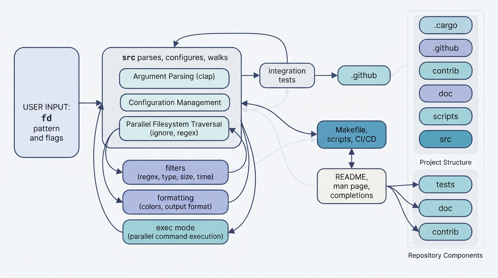

Config is the load-bearing contract
The source page shows Config as the single source of truth after raw command-line parsing. Adding a flag is not complete until it is represented in Config and consumed by the walker, filters, output, or exec path.
This repository builds a command-line tool that searches your filesystem with simpler defaults than the classic find command: it matches names recursively, respects hidden and ignored files by default, can filter by type, size, owner, or time, and can either print matches or run commands on them.

At the highest level, fd is a small promise: finding files should be fast, predictable, and easy to type. The package manifest describes it as a simple, fast and user-friendly alternative to find, and the README opens with the same contract: fd is a program to find entries in your filesystem.
The surprising design choice is that friendliness is not a thin wrapper around output. Defaults are opinionated at the search boundary: fd uses concise syntax, regex or glob matching, parallel traversal, colors, smart case, and ignores hidden or gitignored paths by default, as summarized in the feature list.
The repository is organized around that contract. Cargo metadata names a single binary, fd, with its entry point in src/main.rs, while dependencies bring in command-line parsing, ignore-aware walking, regex matching, coloring, command execution helpers, and optional completions through the manifest dependency set.
From there, the source tree owns runtime behavior, tests pin observable behavior, doc and README explain the user surface, scripts automate release chores, contrib and Makefile install shell completions, and GitHub workflows enforce the same story across supported platforms.
The source page shows Config as the single source of truth after raw command-line parsing. Adding a flag is not complete until it is represented in Config and consumed by the walker, filters, output, or exec path.
The integration tests run the real binary against temporary directory trees and compare exact output, so changes to matching, sorting, errors, path separators, and platform behavior become visible.
The Makefile builds the release binary, generates completions, installs shell integration files, and installs the man page, keeping runtime code and distribution layout separate through the install target.
The README's command-line options are generated from fd help text, while completions and the man page live outside the parser. A new flag must move through source, tests, docs, and completion assets to stay discoverable.
| kind | name | role | signatures | gotcha |
|---|---|---|---|---|
| dir | .cargo | Configures Cargo behavior for platform-specific builds. | none | none |
| dir | .github | Holds GitHub automation, issue templates, and workflows. | none | none |
| dir | contrib | Stores extra shell integration files for packaging. | none | none |
| dir | doc | Contains man page, release notes, media, and sponsors. | none | none |
| dir | scripts | Automates release, packaging, and documentation updates. | none | none |
| dir | src | Implements parsing, walking, filtering, formatting, and execution. | none | none |
| dir | tests | Runs black-box behavioral tests against the fd binary. | none | none |
| file | .gitignore | Excludes generated build and completion artifacts. | target//autocomplete/**/*.rs.bk | none |
| file | CHANGELOG.md | Records release history and unreleased changes. | # Unreleased## Features## Bugfixes# 10.4.2## Bugfixes# 10.4.1# 10.4.0## Features## Bugfixes## Changes# 10.3.0## Features | none |
| file | CONTRIBUTING.md | Explains expectations for contributors and pull requests. | ## Contributing to *fd*## Pull Request Expectations## Add an entry to the changelog## Important links | none |
| file | Cargo.lock | Pins the full Rust dependency graph. | # This file is automatically @generated by Cargo.# It is not intended for manual editing.version = 4 | none |
| file | Cargo.toml | Defines the crate, binary, dependencies, and features. | [package]authors = ["David Peter <mail@david-peter.de>"]categories = ["command-line-utilities"] | none |
| file | Cross.toml | Passes cross-build environment for aarch64 Linux. | # https://github.com/sharkdp/fd/issues/1085[target.aarch64-unknown-linux-gnu.env]passthrough = ["JEMALLOC_SYS_WITH_LG_PAGE=16"] | none |
| file | LICENSE-APACHE | Provides the Apache 2.0 license text. | Apache LicenseVersion 2.0, January 2004http://www.apache.org/licenses/ | none |
| file | LICENSE-MIT | Provides the MIT license text. | MIT LicenseCopyright (c) 2017-present The fd developersPermission is hereby granted, free of charge, to any person obtaining a copy | none |
| file | Makefile | Builds, completes, installs, and packages local artifacts. | PROFILE=releaseEXE=target/$(PROFILE)/fdprefix=/usr/local | none |
| file | README.md | Documents features, usage, installation, and development workflow. | # fd## Features## Demo## How to use### Simple search### Regular expression search### Specifying the root directory### List all files, recursively### Searching for a particular file extension### Searching for a particular file name### Hidden and ignored files### Matching the full path | none |
| file | SECURITY.md | Explains confidential security reporting expectations. | # Security Reporting## Reporting## Confidentiality## Notes | none |
| file | rustfmt.toml | Keeps Rust formatting on standard defaults. | # Defaults are used | none |
The user-facing contract starts with examples like simple recursive search, regex search, explicit roots, extension filters, hidden and ignored files, and full-path matching in the README usage guide.
Inside src, raw options are parsed, resolved into Config, then handed to the walker; child modules handle filters, custom formatting, and command execution. The src page cites the entry point, CLI declaration, Config shape, walker scan, output printing, and exec dispatch as the core path.
The behavior then returns to the outside world as either printed paths or commands run with -x and -X. The README documents per-result and batch command execution, placeholder syntax, and parallel execution as part of the command execution section.
The tests directory runs the compiled fd binary against real temporary directories, using a shared test environment to create files, ignore files, symlinks, and controlled roots. Child citations identify tests/tests.rs as the main behavioral suite and tests/testenv/mod.rs as the sandbox helper.
This matters because many fd features are filesystem semantics, not pure functions: hidden files, ignore rules, symlinks, broken symlinks, ownership, modification time, depth limits, and command execution all depend on real platform behavior.
The development instructions keep this flow simple for contributors: clone, build, run cargo test, and install from the local path through the development commands.
The manifest declares package name, version, edition, minimum Rust version, binary path, features, and install metadata in Cargo.toml and package metadata.
The Makefile builds with locked dependencies, generates shell completions from the built executable or contrib files, and installs the binary, completions, and man page through its build and install rules.
GitHub workflows, release scripts, docs, and package metadata surround that local workflow with CI checks, release packages, Debian artifacts, and published binaries. The README also documents installation from package managers, source, and prebuilt binaries across the installation section.
Stored shapes are files committed to the repository: Cargo.toml, Cargo.lock, README.md, Makefile, licenses, docs, scripts, source files, tests, GitHub workflows, completion files, and configuration directories.
Derived runtime shapes include parsed command-line options, Config, compiled regexes, DirEntry wrappers, file metadata, filters, formatted output, command templates, command batches, exit codes, and sanitized terminal strings.
Derived release shapes include the target binary, generated autocomplete files, Debian packages, compressed release archives, Winget updates, installed man pages, and generated help text.
Cargo.lock is explicitly generated by Cargo and not meant for manual editing according to its header, while the fd-find package entry pins the version and dependency list used to build this release in the package section.
The .cargo page highlights static CRT linking: without the target-specific rustflags, a Windows executable can fail on machines missing the vcruntime DLL.
The .github pages call out stale issue templates, outdated workflow matrices, and cross-compilation prerequisites as failures that often surface only when a contributor files an issue or CI runs a release build.
The contrib pages warn that shell completions live outside the main parser; a new flag added to source must also reach the completion scripts or users will not discover it through tab completion.
The doc and scripts pages both point at generated help and man-page maintenance: option text must be refreshed when the CLI changes, or users read stale behavior.
The scripts page warns that update-help.awk depends on recognizable documentation markers and fd help output; changing either format breaks the automation.
The src page highlights path separators in patterns: without the explicit diagnostic, a pasted path can look like a valid pattern that simply returns no results.
The exec page warns about missing executables, empty command lists, placeholder rules, and exit-code propagation; mistakes here turn search results into failed or misleading commands.
The filter page calls out size-unit parsing and owner lookup. A bad multiplier, missing test case, or unresolved user/group silently changes which files match.
The fmt page identifies escaped braces and placeholder registration as a sharp edge: new placeholders must update both the pattern list and token conversion.
The tests pages warn that symlinks, executable bits, filesystem boundaries, path separators, broken symlinks, and output ordering need platform gates and normalization or CI fails away from the maintainer's machine.